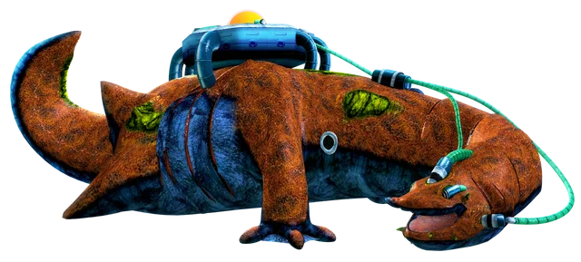

The Biolizard is a creature in the Sonic the Hedgehog universe, first appearing as a boss in Sonic Adventure 2. After defeating the Biolizard the first time, it would morph into the Finalhazard and need to be fought by the player again, this time as one of the final battles in the game. It has reappeared in the games Shadow the Hedgehog, Shadow Generations, Sonic Rivals 2, and Sonic Generations (Nintendo 3DS).
The Biolizard is also known as the Protype to the Ulitmate lifeform as it was created by Gerald Robotnik before Shadow the Hedgehog. Unlike Shadow, it does not contain any DNA from Black Doom. Instead, it is a regular salamander that was fused with chaos energy. It was created both for the organization G.U.N. and to hopefully find a cure for Maria Robotnik's illness. Thus, the salamander was chosen for it's regenerative properties. However, the experiments caused the Biolizard to grow too big for the researchers to handle. It also did not develop past that of a normal animal. This caused the Biolizard project to be deemed a failure and the Biolizard to be forced into stasis as G.U.N. decided its size and violent tendences were too much of a risk. It would stay hidden away until accidentally released by Dr. Eggman fifty years later.
The Biolizard's appearance resembles that of a very, very large salamander. It has an orange back with green spots and a dark blue underbelly. It is unable to sustain itself, so it needs to be connected to external support machines like the one that is on its back. It has a pair of front legs, but its back legs are more similar to flippers. It is immense in size, and needs to live in a very large space.